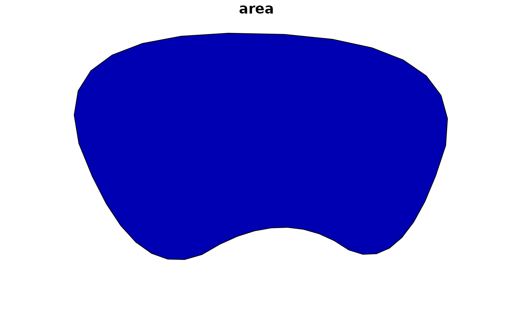
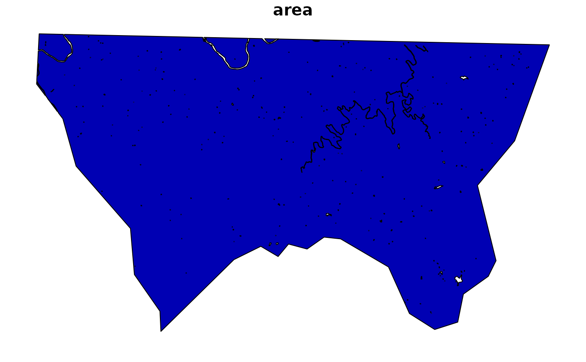

The main format_sf_data function is a wrapper for the following common
steps in transforming an sf object and preparing for mapping or analysis:
Usage
format_sf_data(
x,
crs = getOption("getdata.crs", default = 3857),
erase_data = NULL,
dTolerance = NULL,
smooth = FALSE,
sf_col = NULL,
sf_req = TRUE,
...
)
erase_data(x, erase_data = NULL)Arguments
- x
A
sfobject or, ifsf_reqisFALSE, any object that can be converted to ansfobject with sfext::as_sf.- crs
Coordinate reference system for returned data, Default: getOption("getdata.crs", default = 3857)
- erase_data
A
sf,sfc, orbboxobject with geometry that should be erased from the data, Default:NULL- dTolerance
numeric; tolerance parameter, specified for all or for each feature geometry. If you run
st_simplify, the input data is specified with long-lat coordinates andsf_use_s2()returnsTRUE, then the value ofdTolerancemust be specified in meters.- smooth
If
TRUE, smooth data with smoothr::smooth using default method and parameters, Default:FALSE.- sf_col
Name to use for output
sfcolumn, Default: 'geometry'.- sf_req
If
TRUE, data must be asfobject. IfFALSE, data is passed to sfext::as_sf to convert data to ansfobject.- ...
Additional parameters passed to
format_data
Details
Convert data to an
sfobject with sfext::as_sf ifsf_reqisFALSEMake data valid with sf::st_make_valid if needed
Format data with format_data using the ... parameters
Erase any data overlapping with
erase_data(suggested for use with water or open space)Simplify geometry with sf::st_simplify if
dToleranceis providedSmooth geometry with smoothr::smooth if
smoothisTRUERename the sf column to match
sf_col(defaults to "geometry")
The helper functions for format_sf_data and additional formatting functions
for sf data are described in the details.
Helper functions for format_sf_data:
erase_data: erase intersection of x and erase_data (validity of erase_data checked before sfext::st_erase and for x after completing the operation.
rename_sf_col: Rename
sfcolumn.relocate_sf_col: Relocate
sfcolumn after selected columns (defaults todplyr::everything()).
Examples
library(sf)
#> Linking to GEOS 3.8.0, GDAL 3.0.4, PROJ 6.3.1; sf_use_s2() is TRUE
nc <- read_sf(system.file("shape/nc.shp", package = "sf"))
nc_county <- nc[2,]
# Transform coordinate reference system
st_crs(nc)$epsg
#> [1] 4267
st_crs(format_sf_data(nc, crs = 3857))$epsg
#> [1] 3857
# Simplify and smooth geometry
plot(nc_county, max.plot = 1)
nc_county_simple <- format_sf_data(nc_county, dTolerance = 5000, smooth = TRUE)
plot(nc_county_simple, max.plot = 1)

# Erase data
nc_co_water <- get_tigris_data(type = "area water", state = "NC", county = nc_county$NAME)
#> Retrieving data for the year 2020
#>
|
| | 0%
|
|================================== | 48%
|
|====================================== | 54%
|
|========================================= | 58%
|
|============================================ | 62%
|
|================================================= | 71%
|
|======================================================= | 79%
|
|============================================================= | 87%
|
|=================================================================== | 95%
|
|======================================================================| 100%
nc_county_erased <- format_sf_data(nc_county, erase_data = nc_co_water)
plot(nc_county_erased, max.plot = 1)

# If sf_req is set to FALSE, use any object that can be converted with sfext::as_sf
nc_bbox <- st_bbox(nc)
plot(format_sf_data(nc_bbox, erase_data = nc_county_simple, sf_req = FALSE))